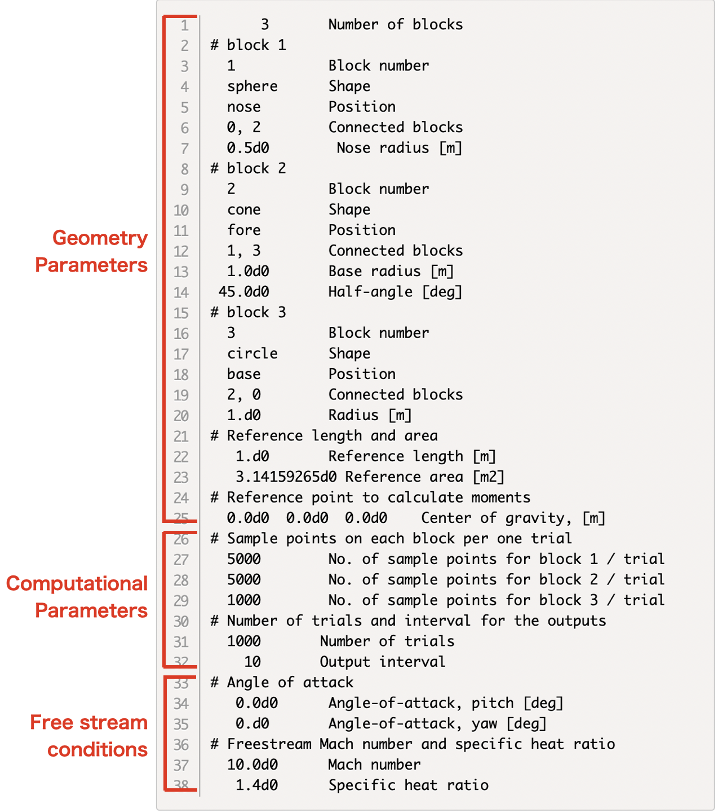
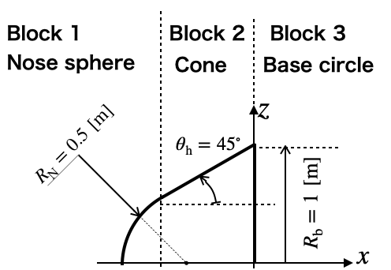
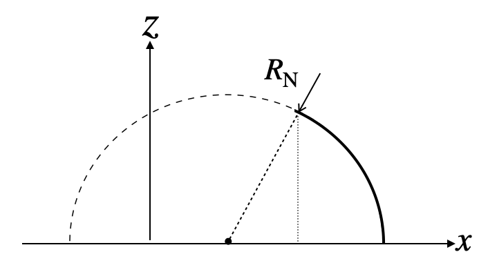
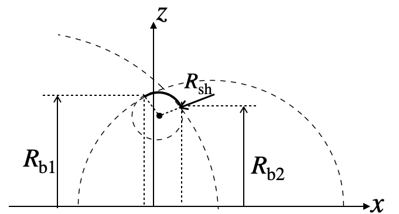
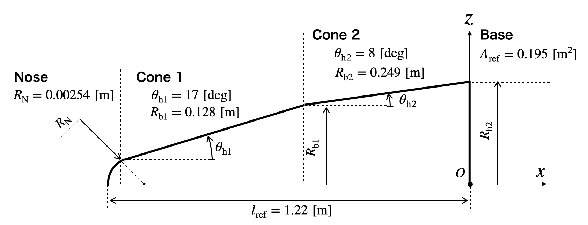
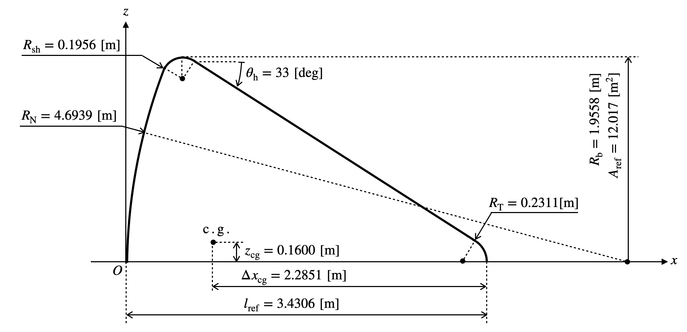
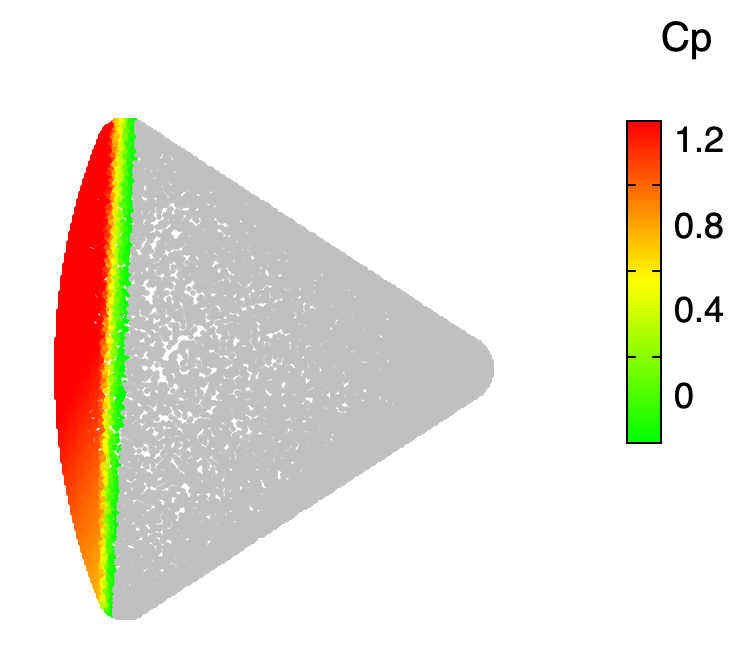

MC-New: A Program to Calculate Newtonian Aerodynamic Coefficients Based on Monte-Carlo Integration
Manual of MCNEW v2022.1
Michiko Ahn Furudate, Chungnam National University, Korea
Contents
- Usage Go to the article
- 1-1. Compile the code
- 1-2. Execute the program
- Prepare the input file Go to the article
- 2-1. Structure of input file
- 2-2. Geometry parameters
- 2-3. Computational parameters
- 2-4. Freestream conditions
- Outputs Go to the article
- 3-1. Typical outputs on the console
- 3-2. Output files
- 3-3. Visualize the sample points
- Example inputs Go to the article
1. Usage
1-1. Compile the code
The source code of MC-New is in the file MC-New_v2022.1.f
.
To compile the code, you need to have a fortran compiler installed in your computer. The code can be compiled by Intel FORTRAN with the command
ifort MCNEW_v2022.1.f -o MCNEW.exe
or by gfortran
gfortran MCNEW_v2022.1.f -o MCNEW.exe
After compiling, an execution file MCNEW.exe
will be generated.
1-2. Execute the program
To execute the program, you need to prepare an input file explained in the next section.
When the execution and the input file input
is in the same directory, the command
execute the program.
Back to Contents
2. Prepare the Input file
2-1. Structure of input file
An input file of MC-New consists of three blocks; geometry parameters, computational parameters, and free stream conditions, as shown below. The lines starting with #
can not be removed.
Example of input file: The input file to calculate Newtonian aerodynamics for a sphere-cone with the nose radius of 1 [m], the base radius of 1 [m], and the half-angle of 45 [deg].
|  |
| Fig.2-1 Structure of input file of the calculation for a sphere-cone in fig. 2-2 |
|  |
| Fig.2-2 An example of sphere-cone geometry |
The line-by-line explanations are given in the following subsections.
3 Number of blocks
# block 1
1 Block number
sphere Shape
nose Position
0, 2 Connected blocks
0.5d0 Nose radius [m]
# block 2
2 Block number
cone Shape
fore Position
1, 3 Connected blocks
1.0d0 Base radius [m]
45.0d0 Half-angle [deg]
# block 3
3 Block number
circle Shape
base Position
2, 0 Connected blocks
1.d0 Radius [m]
# Reference length and area
1.d0 Reference length [m]
3.14159265d0 Reference area [m2]
# Reference point to calculate moments
0.0d0 0.0d0 0.0d0 Center of gravity, [m]
# Sample points on each block per one trial
5000 No. of sample points for block 1 / trial
5000 No. of sample points for block 2 / trial
1000 No. of sample points for block 3 / trial
# Number of trials and interval for the outputs
1000 Number of trials
10 Output interval
# Angle of attack
0.0d0 Angle-of-attack, pitch [deg]
0.d0 Angle-of-attack, yaw [deg]
# Freestream Mach number and specific heat ratio
10.0d0 Mach number
1.4d0 Specific heat ratio
2-2. Geometry parameters
MC-New can treat only axisymmetric geometries; sphere, cone, sphere-cone, circle, or shoulder(torus). The symmetric axis coincides with the x-axis.
Number of blocks
- Line 1: nblk (integer): Number of blocks consisting of the whole geometry
Definition of geometries in each block
- Line 2:
# block 1
: This line is read as a dummy character
- Line 3: iblk (integer): Blocks number
- Line 4: gtype(iblk) (charactor(8)): Shape (sphere / cone / sphere-cone / circle / shoulder)
- Line 5: ptype(iblk) (charactor(8)): Position
- Line 6: icnctm(iblk), icnctp(iblk) (integer): Block numbers of connected neighbor blocks. icnctm is the block number placed on the negative \(x\) side. icnctp is the block number placed on the positive \(x\) side. If no blocks are connected, give 0.
- Line 7: Geometry parameter lists : The lists are depends on the choices of the shape and position. See Table 1. Use one line for one parameter.
Reference length, area, and point
- Line 21:
# Reference...
: This line is read as a dummy character
- Line 22: len_ref (real(8)): Reference length in meters. Usually taken as the total length of the whole geometry along the symmetry axis. This reference length is used only in the calculation of moment coefficients.
- Line 23: area_ref (real(8)): Reference area in square meters. Usually taken as the area projected on the \(yz\) plane.
- Line 24:
# Reference...
: This line is read as a dummy character
Line 25: cg(1),cg(2),cg(3) (real(8)): \(xyz\)-coordinates of the reference center point of moment. Usually taken as the center of gravity. This reference point is used only in the calculation of moment coefficients.
Table 1 Keywords of shape and position types and geometry parameters to be listed
Shape type
keyword |
Position type
keyword |
Parameters |
|
| sphere |
nose |
Radius, \(R_N\) [m] |
 |
|
tail |
Radius, \(R_N\) [m] |
 |
|
full |
Radius, \(R_N\) [m] |
 |
| cone |
fore |
Base radius, \(R_b\) [m]
Half angle, \(\theta_h\) [deg] |
 |
|
rear |
Base radius, \(R_b\) [m]
Half angle, \(\theta_h\) [deg] |
 |
| shoulder |
cone-cone |
Shoulder arc radius, \(R_{sh}\) [m]
Shoulder base radius, \(R_{b}\) [m]
or
Shoulder arc radius, \(R_{sh}\) [m]
Dummy radius, \(R_{b} < 0\) [m]
(Auto-calculation of \(R_{b}\)) |

|
|
cone-sph |
Shoulder arc radius, \(R_{sh}\) [m]
Bottom base radius, \(R_{b}\) [m] |
 |
|
sph-cone |
Shoulder arc radius, \(R_{sh}\) [m]
Top base radius, \(R_{b}\) [m] |
 |
|
sph-sph |
Shoulder arc radius, \(R_{sh}\) [m]
Top base radius, \(R_{b1}\) [m]
Bottom base radius, \(R_{b2}\) [m] |
 |
| cylinder |
horizon |
Base radius, \(R_b\) [m]
Height, \(l\) [m] |
 |
|
vertical |
Base radius, \(R_b\) [m]
Height, \(l\) [m] |
 |
| circle |
top |
Base radius, \(R_b\) [m] |
|
|
bottom |
Base radius, \(R_b\) [m] |
|
2-3. Computational parameters
2-4. Freestream conditions
Back to Contents
3. Outputs
3-1. Typical outputs on the console
input: number of blocks
3
input: block numnber
1
input: shapes of blocks
sphere
input: position of blocks
nose
input: Neighboring block numbers
0 2
input: radius of spherer, [m]
1.0000000000000000
input: block numnber
2
input: shapes of blocks
cone
input: position of blocks
fore
input: Neighboring block numbers
1 3
input: base radius of cone, [m]
1.0000000000000000
input: Half angle of cone, [deg]
45.000000000000000
input: block numnber
3
input: shapes of blocks
circle
input: position of blocks
base
input: Neighboring block numbers
2 0
input: radius, [m]
1.0000000000000000
================================
Block # Shape Position
-------- ---------- ----------
1 sphere nose
2 cone fore
3 circle base
================================
========================================================================================
SUMMARY OF GEOMETRIES
========================================================================================
Block # Shape Position R [m] angle[deg] h [m] x0 [m]
------- ---------- ---------- ------------ ------------ ------------ ------------
1 sphere nose 1.000000 0.000000 0.000000 1.000000
2 cone fore 1.000000 45.000000 1.000000 -0.414214
3 circle base 1.000000 0.000000 0.000000 0.585786
==========================================================================================================
Block # Param1 min Param1 max max - min Param2 min Param2 max max - min Area
-------- ------------ ------------ ------------ ------------ ------------ ------------ ------------
1 0.00000000 6.28318531 6.28318531 -1.57079633 -0.78539816 0.78539816 4.93480220
2 0.70710678 1.00000000 0.29289322 0.00000000 6.28318531 6.28318531 1.84030237
3 0.00000000 1.00000000 1.00000000 0.00000000 6.28318531 6.28318531 6.28318531
======================================================================================================================================
Block # x min x max x len y min y max y len z min z max z len
-------- ------------ ------------ ------------ ------------ ------------ ------------ ------------ ------------ ------------
1 0.00000000 0.29289322 0.29289322 -0.70710678 0.70710678 1.41421356 -0.70710678 0.70710678 1.41421356
2 0.29289322 0.58578644 0.29289322 -1.00000000 1.00000000 2.00000000 -1.00000000 1.00000000 2.00000000
3 0.58578644 0.58578644 0.00000000 -1.00000000 1.00000000 2.00000000 -1.00000000 1.00000000 2.00000000
-------- ------------ ------------ ------------ ------------ ------------ ------------ ------------ ------------ ------------
Total 0.00000000 0.58578644 0.58578644 -1.00000000 1.00000000 2.00000000 -1.00000000 1.00000000 2.00000000
======================================================================================================================================
Reference area: 3.1415926500000002 [Deg]
Reference length: 1.0000000000000000 [Deg]
====================================
================================================
Free stream conditions
------------------------------------------------
Mach number, M: 10.000000000000000
Specific heat ratio: 1.3999999999999999
Maxumum pressure coef, Cp0: 1.8316709773875366
Pitch angle: 0.0000000000000000 [Deg]
Yaw angle: 0.0000000000000000 [Deg]
================================================
Computation conditions
------------------------------------------------
Number of sample points:
Block # 1 : 5000 /trial
Block # 2 : 5000 /trial
Block # 3 : 1000 /trial
Number of trial test: 1000
Interval for output: 10
================================================
************************************************ << Iteration start >> ***********************************************
# Trial Local step values Cumulative average
---------- ------------------------------------------------------ ------------------------------------------------------
# number ivisible CD CLy CLz ivisible CD CLy CLz
---------- ------------ ------------ ------------ ------------ ------------ ------------ ------------ ------------
10 10000 1.25147185 -0.00991070 0.01119672 100000 1.24976248 0.00139312 0.00501194
20 10000 1.24491842 0.00577336 0.01068176 200000 1.24999476 0.00139914 0.00382997
30 10000 1.25414732 -0.00847324 0.00611984 300000 1.25030451 0.00034396 0.00183712
40 10000 1.25290478 -0.00215000 -0.00119800 400000 1.25025153 0.00021929 0.00164828
50 10000 1.24432608 0.00906275 -0.00861712 500000 1.25016623 0.00120797 0.00185455
...
... Skip lines
...
950 10000 1.25318867 0.00764746 0.00040978 9500000 1.24986042 -0.00012443 0.00049939
960 10000 1.24651088 -0.00420243 -0.00798521 9600000 1.24986180 -0.00015018 0.00051028
970 10000 1.24989361 0.01649202 0.02228083 9700000 1.24986268 -0.00010862 0.00053379
980 10000 1.25865271 -0.00290644 -0.01066874 9800000 1.24988087 -0.00009274 0.00051064
990 10000 1.24897690 -0.01017070 -0.00642469 9900000 1.24988224 -0.00010883 0.00048966
1000 10000 1.24516336 0.00654054 0.00289354 10000000 1.24986826 -0.00007591 0.00047082
*********************************************** << End of iteration >> ***********************************************
==================================================================================================================
SUMMARY
==================================================================================================================
Aerodynamic coefficients of each blocks
------------------------------------------------------------------------------------------------------------------
Block # Shape CD_av CLy_av CLz_av L/D CA_av CNy_av CNz_av
------- --------- ------------ ------------ ------------ ------------ ------------ ------------ ------------
1 sphere 0.74988118 0.00011678 0.00029441 0.00801141 0.74988118 0.00011678 0.00029441
2 cone 0.49998708 -0.00019269 0.00017641 0.01252141 0.49998708 -0.00019269 0.00017641
3 circle 0.00000000 0.00000000 0.00000000 0.00000000 0.00000000 0.00000000 0.00000000
----------------- ------------ ------------ ------------ ------------ ------------ ------------ ------------
Total 1.24986826 -0.00007591 0.00047082 0.00038156 1.24986826 -0.00007591 0.00047082
Modified newtonia 1.14467371 -0.00006952 0.00043119 0.00038156 1.14467371 -0.00006952 0.00043119
==================================================================================================================
Moment coefficients of each blocks
------------------------------------------------------------------------------------------------------
Block # Shape Cm,0,x Cm,0,y Cm,0,z Cm,cg,x Cm,cg,y Cm,cg,z
------- --------- ------------ ------------ ------------ ------------ ------------ ------------
1 sphere 0.00000000 -0.00029441 0.00011678 0.00000000 -0.00029441 0.00011678
2 cone 0.00000000 -0.00021027 -0.00030672 0.00000000 -0.00021027 -0.00030672
3 circle 0.00000000 0.00000000 0.00000000 0.00000000 0.00000000 0.00000000
----------------- ------------ ------------ ------------ ------------ ------------ ------------
Total 0.00000000 -0.00050467 -0.00018994 0.00000000 -0.00050467 -0.00018994
Modified newtonia 0.00000000 -0.00046220 -0.00017395 0.00000000 -0.00046220 -0.00017395
Cm,cg-Cm,0 0.00000000 0.00000000 0.00000000
Cm,cg-Cm,0 (MN) 0.00000000 0.00000000 0.00000000
======================================================================================================
Visible area
---------------------------------------------------------------------------
Block # Visible Projected ivisible nsample
-------- ---------- ---------- ---------- ----------
1 1.83982697 1.57044434 5000000 / 5000000
2 2.22138406 1.57075574 5000000 / 5000000
3 0.00000000 0.00000000 0 / 1000000
-------- ---------- ---------- ----------
Total 4.06121103 3.14120008 10000000 / 11000000
-------- ----------
Ref. 3.14159265
===========================================================================
================================================
Computation info
------------------------------------------------
CPU time : 4.2699618339538574 sec
Real time: 4 sec
Number of trials 1000 times
Total number of sample points 11000000 points
================================================
- Line 1~34: Displaying raw inputs
- Line 36~42: Summary geometry shape types and position types
- Line 46~51: Summary of input geometry parameters (Nose/base radius, half-angle, length, \(x\) coordinate of the base)
- Line 52~57: Summary of minimum and maximum values of variables \(\eta\) and \(\xi\) in the parametric domain. These values give the range of integration in each block.
- Line 58~65: Summary of minimum and maximum values of \(xyz\) coordinates of each block.
- Line 68~69: Displaying input reference length and area.
- Line 72~79: Displaying input freestream conditions. (Mach number and specific heat ratio)
- Line 80~88: Displaying input computational parameters.
Line 93~112: Intermediate outputs of the results
- Column 1: Trial step number, itry
- Column 2: Number of visible points within the (itry)th triral step.
- Column 3~5: Drag, lift and side force coefficients at the (itry)th trial step.
- Column 6: Cumulative number of visible points from the first trial step to the (itry)th trial step.
- Column 7~9: Cumulative average of drag, lift and side force coefficients over the (itry) steps of trials.
Line 124~126: Final results of aerodynamic coefficients for the whole geometry
- Column 1: Block number
- Column 2: Shape type of the block
- Column 3~5: Drag, and lift force coefficients in the space coordinates for each block
- Column 6: Lift-to-drag ratio for each block
- Column 7~8: Axial, normal and side force coefficients in the body-fixed coordinates.
Line 127: Final results of aerodynamic coefficients for the whole geometry
Line 128: Aerodynamic coefficients form the Modified Newtonian theory
Line 135~137: Final results of moment coefficients for each block
- Column 1: Block number
- Column 2: Shape type of the block
- Column 3~5: Rolling, pitching, and yawing moment coefficients about axis passing through the tip of the nose.
- Column 6~8: Rolling, pitching, and yawing moment coefficients about axis passing through the center of gravity.
Line 138: Final results of moment coefficients for the whole geometry.
Line 139: Moment coefficients form the Modified Newtonian theory
Line 140: Difference of moment coefficients between the center of gravity and the origin
Line 140: Difference of moment coefficients from the modified Newtonian theory
Line 144~155: Summary of the visible points and area.
Line 157~164: Summary of the computational time.
3-2. Output files
visible_points.dat: Position vectors of the visible sample points and local pressure coefficients
- Column 1~3: Position vector in the body-fixed coordinates of the visible sample points
- Column 4: Local pressure coefficient
- Column 5~7: Components of the pressure coefficient
hidden_points.dat: Position vectors of the hidden sample points.
- Column 1~3:Position vector in the body-fixed coordinates of the invisible sample points
- Column 4: Local pressure coefficient (0 for all points)
- Column 5~7: Components of the pressure coefficient (0 for all points)
convergence.dat: Log of the intermediate results (Same contents as Line 93~112 in the console outputs)
NEW_aero_coefs.dat: Aerodynamic coefficients calculated by the original Newtonian theory
- Column 1: Mach number
- Column 2: Specific heat ratio
- Column 3: Pitch angle
- Column 4: Yaw angle
- Column 5: Drag force coefficient
- Column 6: \(y\) component of lift force coefficient
- Column 7: \(z\) component of lift force coefficient
- Column 8: Lift-to-drag ratio
- Column 9: Axial force coefficient
- Column 10: Normal force coefficient
- Column 11: Side force coefficient
- Column 12: Rolling moment coefficient about the axis passing through the center of gravity
- Column 13: Pitching moment coefficient about the axis passing through the center of gravity
- Column 14: Yawing moment coefficient about the axis passing through the center of gravity
- Column 15: Rolling moment coefficient about the axis passing through the tip of the nose
- Column 16: Pitching moment coefficient about the axis passing through the tip of the nose
- Column 17: Yawing moment coefficient about the axis passing through the tip of the nose
MN_aero_coefs.dat: Aerodynamic coefficients calculated by the Modified Newtonian theory (Same contents of columns in the NEW_aero_coefs.dat
)
Back to Contents
3-3. Visualize the sample points
The sample points used in the calculation in the first trial can be visualized by using GNUPLOT and so on. The following is an example of the script for GNUPLOT
set view equal xyz
set view 90,0, 1, 1
unset border
unset tics
set ticslevel 0
#
set cbrange[0:1.5]
set cbtics 0.4 offset -0.8,2 font "Helvetica, 18"
set palette defined (0 "green", 0.75 "yellow", 1.5 "red")
#
set cblabel "Cp" offset -3.0,11 font "Helvetica, 20" rotate by 0
splot "visible_points.dat" using 1:2:3:4 w points pt 7 ps 0.3 lc palette notitle, "hidden_points.dat" using 1:2:3:4 w points pt 7 ps 0.3 lc "grey" notitle
#
With this script, GNUPLOT displays the picture below. (Appearance can be different depending on the environment.)

Back to Contents
4. Example inputs and outputs
Example 1: Sphere
Calculate aerodynamic coefficients for a sphere with a radius of 1 [m].

Input file
1 Number of blocks
# block 1
1 Block number
sphere Shape
full Position
0, 0 Connected blocks
1.d0 Nose radius [m]
# Reference length and area
1.d0 Reference length [m]
3.14159265d0 Reference area [m2]
# Reference point to calculate moments
0.d0 0.0d0 0.0d0 Center of gravity, [m]
# Sample points on each block per one trial
10000 No. of sample points for block 1 / trial
# Number of trials and interval for the output
1000 Number of trials
10 Output interval
# Angle of attack
0.0d0 Angle-of-attack, pitch [deg]
0.d0 Angle-of-attack, yaw [deg]
# Freestream Mach number and specific heat ratio
10.0d0 Mach number
1.4d0 Specific heat ratio
Outputs
NEW_aero_coefs.dat
#===========================================================================
# Aerodynamic coefs by Newtoninan theory
#===========================================================================
# Mach Gamma Alpha Beta CD CL,y CL,z L/D CA CN,y CN,z Cm,x cg Cm,y cg Cm,z cg Cm,x O Cm,y O Cm,z O
10.00 1.40 0.00 0.00 1.00044574 0.00017648 -0.00032248 -0.00032233 1.00044574 0.00017648 -0.00032248 -0.00000000 0.00032248 0.00017648 -0.00000000 0.00032248 0.00017648
visible_points.dat and hidden_points.dat

Back to Contents
Example 2: Cone
Calculate aerodynamic coefficients for a cone with a base radius of 1 [m] and half-angle of 45 [deg].

Input file
1 Number of blocks
# block 1
1 Block number
cone Shape
fore Position
0, 0 Connected blocks
1.0d0 Cone base radius [m]
45.0d0 Cone half-angle [deg]
# Reference length and area
1.d0 Reference length [m]
3.14159265d0 Reference area [m2]
# Reference point to calculate moments
0.d0 0.d0 0.d0 Center of gravity, [m]
# Sample points on each block per one trial
10000 No. of sample points for block 1 / trial
# Number of trial and interval for ouput
1000 Number of trials
10 Ouput interval
# Angle of attack
0.d0 Angle-of-attack, pitch [deg]
0.d0 Angle-of-attack, yaw [deg]
# Freestream Mach number and specific heat ratio
10.0d0 Mach number
1.4d0 Specific heat ratio
Outputs
NEW_aero_coefs.dat
#===========================================================================
# Aerodynamic coefs by Newtoninan theory
#===========================================================================
# Mach Gamma Alpha Beta CD CL,y CL,z L/D CA CN,y CN,z Cm,x cg Cm,y cg Cm,z cg Cm,x O Cm,y O Cm,z O
10.00 1.40 0.00 0.00 1.00027043 0.00020074 -0.00014558 -0.00014554 1.00027043 0.00020074 -0.00014558 -0.00000000 0.00031665 0.00030795 -0.00000000 0.00031665 0.00030795
visible_points.dat and hidden_points.dat

Back to Contents
Example 3: Biconical object
Calculate aerodynamic coefficients for a biconical geometry.

Input file
4 Number of blocks
# block 1
1 Block number
sphere Shape
nose Position
0, 2 Connected blocks
0.0254d0 Nose radius [m]
# block 2
2 Block number
cone Shape
fore Position
1, 3 Connected blocks
0.127579d0 Cone base radius [m], (x=0)
17.0d0 Cone half-angle [deg]
# block 3
3 Block number
cone Shape
fore Position
2, 4 Connected blocks
0.2492d0 Cone base radius [m], (x=0)
8.0d0 Cone half-angle [deg]
# block 4
4 Block number
circle Shape
bottom Position
3, 0 Connected blocks
0.2492d0 Radius [m]
# Reference length and area
1.22119478 Reference length [m]
0.194657d0 Reference area [m]
# Reference point to calculate moments
1.22119478 0.d0 0.d0 Center of gravity
# Sample points on each block per one trial
1000 Block 1
50000 Block 2
150000 Block 3
5000 Block 4
# Number of trial and interval for averaging
100 Number of trials
10 Ouput interval
# Angle of attack
10.d0 Angle-of-attack, pitch [deg]
20.d0 Angle-of-attack, yaw [deg]
# Freestream Mach number and specific heat ratio
10.d0 Mach number
1.4d0 Specific heat ratio
Outputs
NEW_aero_coefs.dat
#===========================================================================
# Aerodynamic coefs by Newtoninan theory
#===========================================================================
# Mach Gamma Alpha Beta CD CL,y CL,z L/D CA CN,y CN,z Cm,x cg Cm,y cg Cm,z cg Cm,x O Cm,y O Cm,z O
10.00 1.40 10.00 20.00 0.47542649 -0.75477049 0.30228007 0.63580822 0.18997945 -0.71359675 0.34044173 -0.00000000 0.13627618 0.28563578 -0.00000000 -0.20416555 -0.42796098
visible_points.dat and hidden_points.dat

Back to Contents
Example 4: Apollo capsule
Calculate aerodynamic coefficients for Apollo command module geometry.

Input file
4 Number of blocks
# block 1
1 Block number
sphere Shape
nose Position
0, 2 Connected blocks
4.6939d0 Nose radius [m]
# block 2
2 Block number
shoulder Shape
sph-cone Position
1, 3 Connected blocks
0.1956d0 Shoulder arc radius [m]
1.8368d0 Radius of nose base [m]
# block 3
3 Block number
cone Shape
rear Position
2, 4 Connected blocks
1.9933d0 Cone base radius [m], (x=0)
33.0d0 Cone half-angle [deg]
# block 4
4 Block number
sphere Shape
tail Position
3, 0 Connected blocks
0.2311d0 Radius [m]
# Reference length and area
3.4306d0 Reference length [m]
12.01707457d0 Reference area [m2]
# Reference point to calculate moments
1.1455d0 0.0d0 0.1600d0 Center of gravity, [m]
# Sample points on each block per one trial
10000 No. of sample points for block 1 / trial
4000 No. of sample points for block 2 / trial
19000 No. of sample points for block 3 / trial
1000 No. of sample points for block 3 / trial
# Number of trial and interval for output
1000 Number of trials
10 Ouput interval
# Angle of attack
-25.0d0 Angle-of-attack, pitch [deg]
0.d0 Angle-of-attack, yaw [deg]
# Freestream Mach number and specific heat ratio
30.0d0 Mach number
1.4d0 Specific heat ratio
Outputs
NEW_aero_coefs.dat
#===========================================================================
# Aerodynamic coefs by Newtoninan theory
#===========================================================================
# Mach Gamma Alpha Beta CD CL,y CL,z L/D CA CN,y CN,z Cm,x cg Cm,y cg Cm,z cg Cm,x O Cm,y O Cm,z O
30.00 1.40 -25.00 0.00 1.20500274 0.00004079 0.46544388 0.38625960 1.28880845 0.00004079 -0.08742075 0.00000190 -0.01080942 0.00000913 -0.00000000 0.07848977 0.00002275
visible_points.dat and hidden_points.dat

Back to Contents